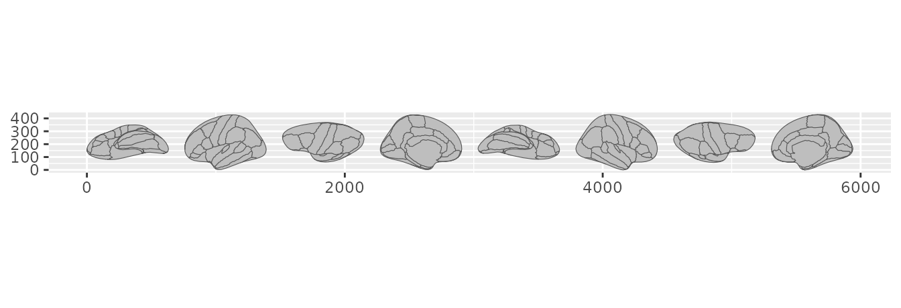
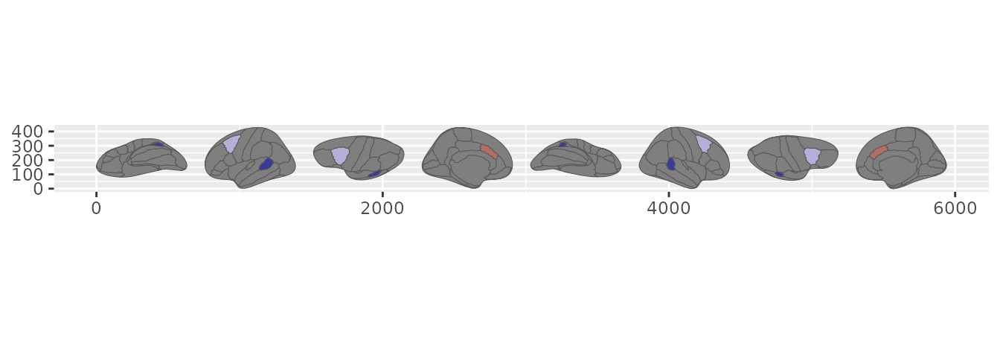
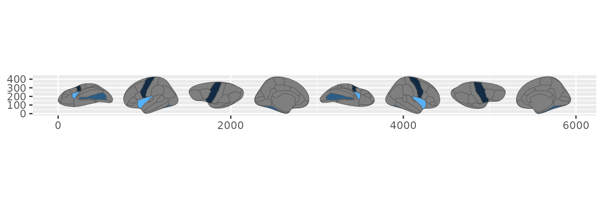
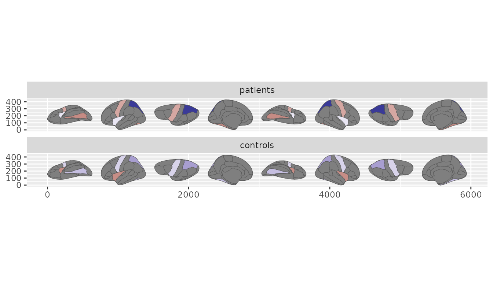
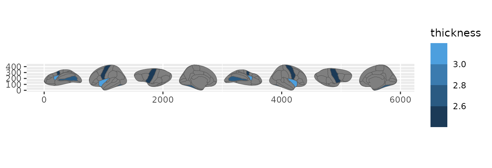
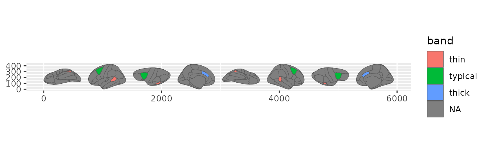
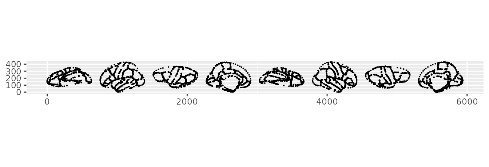

The first time you plot three regions and get a whole brain back, it
can look like sleight of hand. You handed geom_brain() a
few rows; it drew the entire cortex, greyed the regions you left out,
and coloured the ones you named. There is no trick – just three small
ggplot2 pieces doing their jobs. Knowing what each one does explains why
faceting, aggregation, and colour scales behave the way they do, and how
to build on them.
The brain shape is drawn by a stat
The whole brain always renders, even when your data covers only a
handful of regions. That comes from StatBrain, a ggplot2
stat that generates the atlas geometry instead of reading it
from your data. It is the same move geom_sf() makes: the
shape is computed, not supplied.
A generated shape has a consequence worth stating plainly. A bare
atlas has no values to colour, so it draws grey.
geom_brain() is for putting your numbers on the
brain; when you want to look at the atlas itself, palette and all, reach
for plot(dk()).
ggplot() +
geom_brain(atlas = dk(), show.legend = FALSE)
A bare atlas: the full shape, drawn grey.
Give it data and the regions you have values for take colour. Everything else stays grey, so the brain remains legible even when you have measured only a corner of it.
results <- data.frame(
region = ggseg.formats::atlas_regions(dk())[1:3],
score = c(2.1, -1.4, 0.8)
)
ggplot(results, aes(fill = score)) +
geom_brain(atlas = dk(), show.legend = FALSE) +
scale_fill_gradient2()
Three regions have values; the rest of the brain still renders.
Repeated regions are combined
Real data rarely arrives one row per region. You might have one row
per subject, or per session, or per run. When several rows land on the
same region, StatBrain reduces them to a single value
before drawing. The default is the mean, and the fun
argument takes any function that turns a vector into one number.
thickness <- data.frame(
region = rep(ggseg.formats::atlas_regions(dk())[1:3], each = 4),
subject = rep(1:4, times = 3),
thickness = c(2.5, 2.6, 2.4, 2.7, 3.1, 3.0, 3.2, 2.9, 2.8, 2.7, 2.9, 2.6)
)
# mean per region (the default)
ggplot(thickness, aes(fill = thickness)) +
geom_brain(atlas = dk(), show.legend = FALSE)
Repeated-measures data summarised by mean and by maximum.
# the maximum instead
ggplot(thickness, aes(fill = thickness)) +
geom_brain(atlas = dk(), fun = max, show.legend = FALSE)
Repeated-measures data summarised by mean and by maximum.
Faceting comes for free
Here is where being a real stat pays off. ggplot2 recomputes a stat
once per facet panel, so the complete brain appears in every panel
straight from your data. No group_by(), no copying the
atlas by hand – facet_wrap() and facet_grid()
behave exactly as they do for any other geom.
cohorts <- expand.grid(
region = ggseg.formats::atlas_regions(dk())[1:4],
group = c("patients", "controls"),
stringsAsFactors = FALSE
)
cohorts$score <- rnorm(nrow(cohorts))
ggplot(cohorts, aes(fill = score)) +
geom_brain(atlas = dk(), show.legend = FALSE) +
facet_wrap(~group, ncol = 1) +
scale_fill_gradient2()
One brain per cohort, each drawn from that cohort’s own rows.
Each panel is summarised on its own rows, so the same region can read differently from one panel to the next.
Colour, including bins, is just a scale
StatBrain hands the geom an ordinary continuous
fill. That one fact means every ggplot2 fill scale works
without ggseg doing anything special.
So how would you make a binned map – discrete steps instead of a smooth gradient? You do not reach for a ggseg feature; you reach for a scale. A stepped scale bins the aggregated value for you.
ggplot(thickness, aes(fill = thickness)) +
geom_brain(atlas = dk()) +
scale_fill_steps(n.breaks = 4)
Binning the aggregated value with a stepped scale.
When your bins carry meaning – a threshold, a clinical band – cut the values yourself and map the resulting factor.
thickness$band <- cut(
thickness$thickness,
breaks = c(-Inf, 2.7, 3.0, Inf),
labels = c("thin", "typical", "thick")
)
ggplot(thickness, aes(fill = band)) +
geom_brain(atlas = dk())
Named bands, made with cut() and mapped as a discrete fill.
The division of labour is the point: the stat decides how many rows become one value, and the scale decides how that value becomes a colour. Continuous gradients, viridis, diverging, binned, stepped, and manual palettes all compose the same way.
The three pieces, if you want to build on them
Under geom_brain() sit three ggproto objects, each with
a narrow job.
StatBrain generates the atlas geometry per panel,
reduces your values per region with fun, and joins them
onto the shape. It emits the polygon x and y,
the group and subgroup that encode ring
structure and holes, and passes your fill straight
through.
GeomBrain is a thin GeomPolygon subclass.
Its only additions are the brain defaults – a grey fill and a
grey35 outline – and both step aside the moment you map an
aesthetic of your own.
LayerBrain is the layer that runs at plot-build time. It
flattens the atlas, hands the geometry to the stat, and quietly maps the
join keys as aesthetics so region and label
survive into the stat.
stat_brain() is the stat-first spelling of
geom_brain() – both build the same layer. Reach for it when
you want StatBrain paired with a different geom, such as
drawing the atlas vertices as a point cloud.
ggplot() +
stat_brain(atlas = dk(), geom = "point", size = 0.1)
StatBrain with a point geom instead of the polygon default.
Everything else you already use – position_brain()
layouts, coord_brain(), the scale_*_brain()
palettes, theme_brain() – sits on top of these three pieces
without changes.